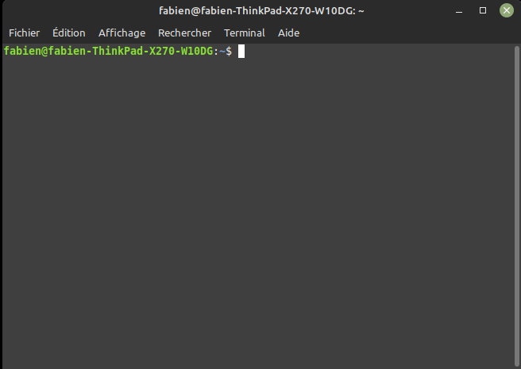

Système d'exploitation GNU/Linux
Systèmes d'exploitations :
Définition et historique
D'après la définition de Wikipedia :
« En informatique, un système d'exploitation (souvent appelé OS — de l'anglais operating system) est un ensemble de programmes qui dirige l'utilisation des ressources d'un ordinateur par des logiciels applicatifs.
Il reçoit des demandes d'utilisation des ressources de l'ordinateur — ressources de stockage des mémoires (par exemple des accès à la mémoire vive, aux disques durs), ressources de calcul du processeur central, ressources de communication vers des périphériques [...] ou via le réseau — de la part des logiciels applicatifs. Le système d'exploitation gère les demandes ainsi que les ressources nécessaires évitant les interférences entre les logiciels. »
Historique
Les années 1960 ont constitué un tournant pour les système d'exploitation. Dans le cadre du projet MAC au MIT (Massachusset Institute of Technology), le système d'exploitation CTTS (Compatible Time Sharing System)est publié en 1961. C'est l'un des tout premiers système d'exploitation à temps partagé, permettant à plusieurs utilisateurs d'utiliser un ordinateur en même temps. Cette apparente simultanéité dans l'exécution des programmes a permis de se diriger vers l'informatique moderne.
Le MIT s'accocia aux laboratoires BELL et à General Electric pour créer Multics qui était un système innovant, héritant de CTTS, et était l'un des premier système d'exploitation avec système de fichier hiérarchique, temps partagé, multitâche préemptif (c'est-à-dire la capacité d'arrêter ou d'exécuter une tâche planifiée en cours), multiutilisateur, avec une prise en compte de la sécurité. La première version sortit en 1965.
En 1969, les laboratoires BELL sortirent du projet et deux de leurs plus brillants informaticiens, Ken THOMPSON et Dennis RITCHIE qui avaient travaillé sur le projet MULTICS en conçurent une version simplifiée (ils considéraient MULTICS inutilement complexe) qu'ils nommèrent initialement UNICS (UNiplexed Information and Computing Service) puis UNIX. L'informatique moderne était née !
Au fil des années, des surcouches de plus en plus complexes sont ajoutées aux systèmes d'exploitations afin de gérer par exemple les entrées claviers, puis souris, et une interface graphique est ajoutée, simplifiant la tâche pour l'utilisateur.
Chaque ordinateur doit donc disposer d'un OS afin de pouvoir faire fonctionner les différents logiciels en parallèle. Historiquement, chaque fabriquant d'ordinateur a développé en partie son OS. On pourra, de manière non-exhaustive, citer :
- OS/360 par IBM, en 1968 ;
- DOS par Microsoft en 1981 ;
- Mac OS par Apple en 1984 ;
- TOS par Atari en 1985 ;
- AmigaOS par Commodore en 1985;
- Windows 3.X par Microsoft en 1990 ;
- GNU/Linux par la communauté en 1991 ;
- Android par Google en 2007 ;
- iOS par Apple en 2007.
GNU/Linux
En 1985, Richard Stallman1 quitte le MIT pour écrire un système d'exploitation compatible Unix : GNU (Gnu is Not Unix)2. Opposé au principe du logiciel « propriétaire », il publie le manifeste GNU, où il expose ses idées de logiciel libre, permettant à chacun de s'appropprier, de modifier et de diffuser le code source d'un logiciel.
En 1991, Linus Torvalds, étudiant norvégien de 21 ans, décide d'écrire un mini OS dérivé d'Unix pour son PC. Réputé pour sa stabilité m(mais aussi pour sa complexité d'installation), le noyau Linux est adopté par une grande communauté de bidouilleurs sur l'internet, qui étendent régulièrement ses possibilités. Sans publicité, soutenu par la communauté du libre et de l'open-source3, Linux se répand doucement et deviens rapidement une alternative crédible à Windows, à tel point que 90 % des serveurs du cloud sont des serveurs Linux. Linus Torvalds continue à diriger le développement de Linux, et est considéré comme le « dictateur bienveillant à vie » (Benevolent Dictator for Life) de celui-ci.
Il existe de nombreuses distributions Linux, soit pour des serveurs
Premiers Pas
Installation sur Raspberry Pi 4
Il existe des distributions Linux spécifiques pour Rasberry 4, mais nous utiliserons Raspberry Pi OS (anciennement connu sous le nom de Raspbian), qui est une distribution basée sur Linux Debian spécialement optimisé pour Rasberry Pi.
Une image est téléchargeable ici
Une fois l'image installée sur une carte micro-SD, le mini-ordinateur devrait-être immédiatement fonctionnel.
A faire
Suivez toutes les étapes d'installation de l'OS Raspebbry Pi OS, en créant un utilisateur administrateur avec votre nom de famille + première lettre de votre prénom, et un mot de passe simple.
Le terminal
Pour obtenir la ligne de commande dans Raspbian, il faut lancer le programme Terminal.

Le prompt est de la forme nom_utilisateur@nom_machine : chemin_dossier_courant $.
Normalement, votre répertoire courant est symbolisé par ~, ce qui est un raccourci pour symboliser le répertoire personnel de l'utilisateur.
Le système de fichiers
Sur un système Linux, tout est un fichier, y compris un dossier. Mais pour rester compatible avec l'arborescence classique de windows, nous parlerons donc de :
- fichier lorsqu'il s'agit d'une feuille de l'arborescence ;
- dossier lorsqu'on parle d'un noeud ayant des enfants.
Pour naviguer dans l'arborescence, il est nécessaire de connaître deux commandes4 :
- la commande
ls, qui permet de lister tous les enfants du répertoire courant dans l'arborescence, et peut utiliser les options suivantes :ls -aaffiche les fichiers cachés ;ls -Raffiche tous les fichiers dans les sous-répertoires (de manière récursive) ;ls -laffichera les détails des fichiers (autorisations, taille, propriétaires, etc...).
- la commande
cdpour Change Directory, qui peut s'utiliser desmanières suivantes :cd ~, ramène au répertoire de l'utilisateur courant ;cd nom_du_repertoire_enfant, qui déplace le promptdans le répertoire enfant sélectionné (adressage relatif) ;cd /chemin/absolu/vers/un répertoire, qui déplace vers le répertoire cible (adressage absolu) ;cd ..qui permet de remonter au répertoire parent.
Se repérer dans l'arborescence
- Lister les repertoires déjà présents dans votre repertoire personnel.
- Remonter l'arborescence jusqu'à la racine. Quel est le chemin absolu de votre répertoire personnel ?
- Déplacez-vous jusqu'au répertoire
/usr/binet listez les fichiers présents - Retournez dans votre dossier personnel, puis listez les fichiers présents,en affichant les détails. Quelles sont les informations données ? Quels sont les utilisateurs recensés du système ?
Les utilisateurs et les droits
En Linux, tout fichier, et par extension dossier, appartient à un propriétaire ainsi qu'à un groupe, et un utilisateur quelconque ne pourra pas forcément avoir tous les droits sur un fichier qui ne lui appartient pas.
Les utilisateurs
Pour un fichier, on distinguera trois types d'utilisateurs :
upour user, c'est-à-dire le propriétaire du fichier ;gpour group, le groupe auquel appartient le fichier ;opour other, tous les autres utilisateurs.
Les droits
Pour un fichier donné, on distinguera 4 permissions :
r: read, droit de lire le fichier ;w: write, droit de modifier le fichier ;x: execute, droit d'exécution du fichier ;-: aucun droit sur le fichier ;
Attribution des permissions
Pour donner ou supprimer des permissions sur un fichier mon_texte.txt, on utilise la commande `chmod de la manière suivante :
-
pour donner les droits en lecture et écriture à l'utilisateur
chmod u+rw mon_texte.txt -
pour supprimer les droits en modification au groupe :
chmod g-w mon_texte.txt -
pour supprimer tous les droits aux autres utilisateurs :
chmod o-rwx mon_texte.txt
Il est aussi possible d'utiliser la notation octale pour gérer ces droits :
chmod 640 mon_texte.txt
en sachant que r = 4, w =2, x=1, et que le premier chiffre correspond à l'utilisateur, le second au groupe, et le troisième aux autres. Ainsi ici :
- l'utilisateur à les droits de lecture et d'écriture (4+2 = 6) ;
- le groupe à le droit de lecture (4) ;
- les autres n'ont aucun droit (0).
Une commande telle que chmod 777 mon_texte.txt done tous les droits de lecture, écriture et exécution à tous les utilisateurs du système.
Les principales commandes sous Linux
Voici, de manière non-exhaustive, quelques unes des commandes les plus utiles sous Linux :
pwd: donne le chemin absolu du répertoire courant.man(raccourci de manual) : donne le manuel de la commande passée en argument.cat(raccourci de concatenate) : son utilisation simple est d'afficher le contenu d'un fichier directement dans le terminal. Cependant cette commande permet bien d'autres choses :cat > nv_fichier.txt: crée un nouveau fichier dans le répertoire courant, et le remplit avec les saisies de l'utilisateur (Ctrl+C pour quitter) ;cat fichier 1 fichier2 > fichier3: concatène les contenus des fichiers 1 et 2 dans un nouveau fichier.
-
cp(raccourci de copy) : copie un fichier dans un dossier :cp bidule.jpg /home/bob/photocopie le fichierbidule.jpgvers le répertoire/home/bob/photo, si les permissions sont correctement attribuées. -
mv(raccourci de move) : dépalce un fichier vers un répertoire cible, et par extension permet de renommer un fichier :mv bidule.jpg /home/bob/photodéplace le fichierbidule.jpgvers/home/bob/photo;mv bidule.jpg truc.jpgrenomme le fichierbidule.jpgentruc.jpg.
-
mkdir nv_dossier(pour make directory) : crée un nouveau répertoire dont le nom est passé en argument. rmdir nom_dossier(pour remove directory) : supprime un répertoire vide dont le nom est passé en argument.-
rm(pour remove) : supprime le ou les fichiers passés en arguments. Attention à cette commande qui peut tout casser ! :rm *: supprime tous les fichiers du répertoire courantrm -R: supprime de manière récursive tous les fichiers et sous-dossiers du répertoire courant !- Il existe aussi des commandes interdites, à ne jamais utiliser sous peine de mise au ban de la société, lynchage en place publique, etc...
-
touch nv_fichier: permet de créer un nouveau fichier vide en lui passant le nom en argument. A préférer à la commandecat. -
find: permet de chercher des fichiers et/ou des dossier dans un dossier donné. Par exemplefind /home/ -name mon_texte.txtcherche le fichiermon_texte.txtdans le répertoirehomeet tous ses sous-dossiers. locate: permet de donner la localisation d'un fichier dans le système de fichier.locateest très rapide car elle utilise une base de donnée mise à jour régulièrement qui recense tous les fichiers du système.grep: permet de chercher une chaîne de caractère dans un fichier.grep toto bob.txtrenverra toutes les lignes du fichierbob.txtcontenant la chaînetoto.grepest très efficace, mais ne fonctionne pas correctement sur les fichierspdfetodt...head: renvoie les 10 premières lignes d'un fichier. On peut paramétrer le nombre de lignes obtenues avec l'option-n:head -n 5 bob.txtenvoie les 5 premières lignes du fichierbob.txt.tail: fonctionne de la même manière quehead, mais en renvoyant les 10 dernières lignes.diff: compare deux fichiers lignes par lignes, et renvoie toutes celles présentant une différence. Pratique !
Il reste une commande essentielle, qui est la commande sudo : celle-ci permet d'exécuter une autre commande avec les privilègess de super-utilisateur (root). Attention ! Avec de grands pouvoirs viennent de grandes responsabilités !
-
Richard Stallman est un peu le grand gourou de l'informatique, soit adulé, soit détesté... ↩
-
que voici un bel acronyme récursif ! ↩
-
en réalité, nous devrions toujours parler de système GNU/Linux, car Linux n'est que le noyau du système. On trouvera ici un célèbre texte de Richard Stallman sur ce point de détail. Fun fact, ce texte est parfois récité par coeur par certains ardents défenseurs du libre... ↩